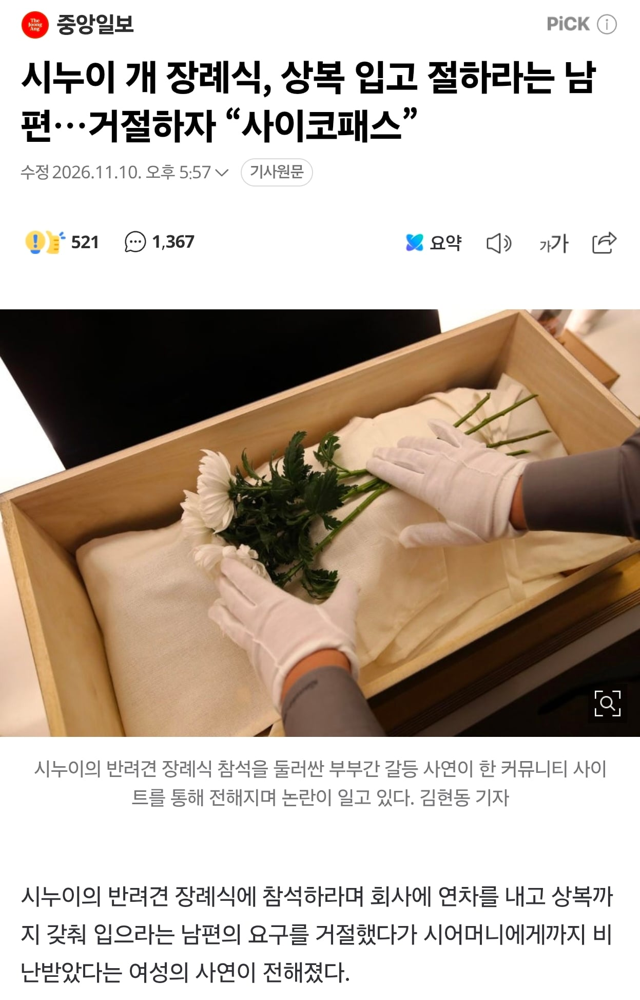

??

??
개가 개한테 절한다는데 뭐 그정도야
개새끼 집안인가보지
주작 절 하는 곳 없음
배경지식 없이 주작 글쓰면 이렇게 됨
아랫것에 뭔 절이야
주작같은 썰의 기사네

출처 : (커뮤니티) 사진은 죄다 ai
끄덕
상복도 직접챙겨간다는얘기냐?ㅋㅋㅋㅋ ㅅㅂ
걍 주작썰 아닐까 ㅋㅋㅋ 개장례식까지야 뭐 이해해도 거기에 대고 절은 왜 함
업체는 신났어요~
너무 주작같아서 출처 찾으려 하니까 이곳저곳에서 다 우라까이 했네
심지어 어디에도 출처는 없고 글 캡쳐도 안보이고
개 장례식 상복부터 주작 냄새 ㅋㅋ
뭔 되도않는소리를 지껄이고있어
주작썰이지.. 저게 진짜면 가족들이 정신병인건데 ㅋㅋㅋ
씨발 개새끼에 절을해?
개가 상전이네 ㅋㅋㅋㅋ
주작글 렉카해오는 ㅂㅅ새끼
주작이지 ㅋㅋㅋㅋㅋ 저렇게 가부장적인 남자가
시누이 개 장례식을간다고?
절 ㅇㅈㄹ하고있네 반려동물 장례식장 가면 사람 많고 순서 밀려있어서 화장 시키기 전 마지막으로 만져 볼 시간도 10분 15분 꼴랑주는데 ㅋㅋㅋ 좆주작은ㅋㅋㅋ
가부장적이면 개새끼 장례식 한다고 뒤지게 판 엎어야 하는거아님???? ㅋㅋㅋㅋㅋㅋㅋㅋㅋㅋㅋㅋㅋㅋㅋㅋㅋㅋㅋㅋㅋ
"일반쓰레기"
예전엔 당사자랑 인터뷰하는 성의라도 보였는데 요즘은 그냥 커뮤소설 주워가서 찍 쓰네ㅋㅋ
상상아님.?
자식 죽어도 자식에게도 절은 안하는 걸로 아는데
짱23깨주작이지
ㅈ작 아님?
저건 정신병인데
개 장례식에 절하는건 좀;;;